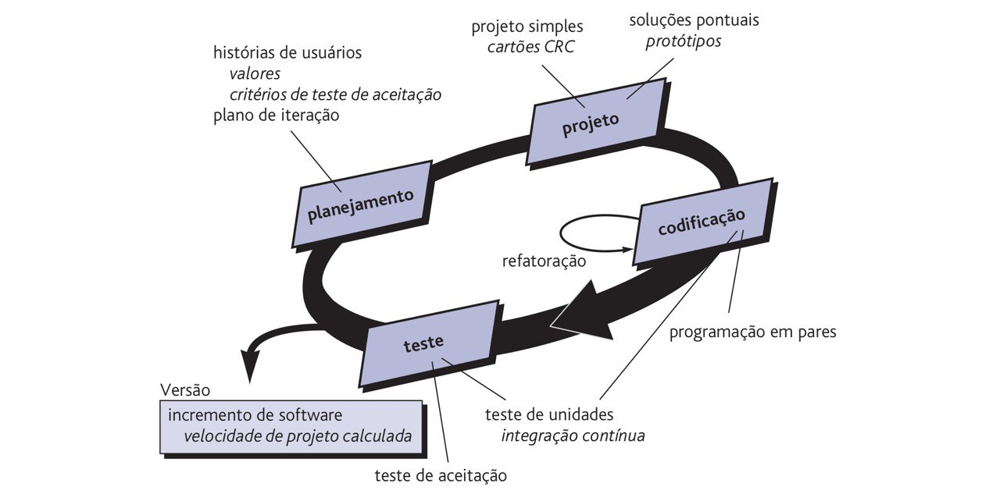

Visão do Produto e Projeto
Histórico de revisão
| Data | Versão | Descrição | Autor |
|---|---|---|---|
| 31/10/22 | 0.1 | Primeiro preenchimento do documento | Beatriz |
| 08/11/22 | 0.2 | Ajustes iniciais sugeridos | Beatriz |
| 15/11/22 | 0.3 | Definição do processo de desenvolvimento | Pedro, Guilherme, Mário, Beatriz, Israel |
1 Visão Geral do Produto
O Strix é um produto voltado aos profissionais de educação física que trabalham como Personal Trainers, principalmente os autônomos, mas também pode ser usado pelos que trabalham em alguma academia. É um sistema para a gestão geral do profissional nas suas atividades, possuindo funcionalidades como calendário para marcação de aulas, cadastro de alunos, controle de pagamentos recebidos, envio de planejamento de treino para os alunos entre outros.
O diferencial comparado a outros produtos disponíveis é a gratuidade independente da quantidade de alunos registrados e a oportunidade de fazer uma gestão completa do negócio em uma única ferramenta (da gestão financeira, de agenda, de alunos e de treinos). Se o cliente procura uma ferramenta para se organizar sem custo algum, de fácil utilização e com tudo que precisa em um lugar só, esse é o sistema ideal pra ele!
1.1 Declaração de Posição do Produto
| Para | Personal Trainers |
| Quem | Trabalha com vários clientes diferentes e precisa gerenciar seu negócio |
| O Strix | É um Sistema web de gestão |
| Que | Permite o preenchimento da agenda de aulas do personal, o cadastro dos alunos com seus dados, o controle de pagamentos recebidos, o cadastro de exercícios, a seleção dos mesmos e o envio automatizado dos treinos |
| Ao contrário | Do Mobitrainer |
| Nosso produto | É totalmente gratuito, não importa quantos alunos o profissional tenha e possibilita uma gestão completa do negócio |
1.2 Objetivos do Produto
O objetivo do sistema é facilitar ao personal trainer o envio dos treinos personalizados para seus alunos e o controle de pagamentos, ou seja, a automação do negócio do personal.
1.2 Tecnologias a Serem Utilizadas
Javascript, React, Node.js
2 Visão Geral do Produto
2.1 Organização do Projeto
| Papel | Atribuições | Responsável | Participantes |
|---|---|---|---|
| Tech lead | Codificar o produto, codificar testes unitários, realizar refatoração | Mário | Guilherme, Beatriz, Pedro, Israel |
| Product Owner | Atualizar o escopo do produto, organizar o escopo das sprints, validar as entregas | Beatriz | Guilherme |
| Scrum Master | Garantir que o Time Scrum se oriente pelos valores e práticas do Scrum, certifica-se de que os membros não se comprometam com compromissos além dos que eles conseguem cumprir dentro de uma Sprint. | Guilherme | Mário, Beatriz, Israel, Pedro |
| Analista de Qualidade | Garantir a qualidade das entregas e o cumprimento dos conceitos propostos. | Pedro | Mário, Beatriz, Israel |
2.2 Planejamento das Fases e/ou Iterações do Projeto
| Sprint | Produto (entrega) | Data Início | Data Fim |
|---|---|---|---|
| Sprint 1 | Definição do Produto | 31/10/2022 | 18/11/2022 |
| Sprint 2 | Definição do Backlog do produto | 19/11/2022 | 03/12/2022 |
| Sprint 3 | Criação do protótipo e configuração de ambiente de desenvolvimento | 04/12/2022 | 19/12/2022 |
| Sprint 4 | Implementação do CRUD de aluno | 20/12/2022 | 03/01/2023 |
| Sprint 5 | Implementação do CRUD de exercício e envio de treino | 04/01/2023 | 18/01/2023 |
| Sprint 6 | Implementação do CRUD de aula e do CRUD de pendências | 19/01/2023 | 02/02/2023 |
| Sprint 7 | Confirmar pagamento, logar no sistema, alterar senha e visualizar calendário | 03/02/2023 | 09/02/2023 |
2.3 Matriz de Comunicação
| Descrição | Área/Envolvidos | Periodicidade | Produtos Gerados |
|---|---|---|---|
| Comunicação sobre a situação das atividades sendo executadas (Daily) | Equipe do Projeto | Diária | Resumo da reunião |
| Acompanhamento das atividades em desenvolvimento (Sprint Review) | Equipe do Projeto | Quinzenal | Resumo da reunião |
| Análise dos riscos, planejamento de próximas atividades (Sprint Planning) | Equipe do Projeto | Quinzenal | Relatório de situação do projeto e resumo da reunião |
| Retrospectiva | Equipe do Projeto | Quinzenal | Relatório sobre situação da equipe e dificuldades |
| Comunicar situação do projeto | Equipe do Projeto, Professor | Semanal | Resumo da reunião e feedback do professor |
| Reunião com o cliente | Equipe do Projeto | Quinzenal | Feedback do cliente |
2.4 Gerenciamento de Riscos
Os riscos identificados são:
- Falta de afinidade com a linguagem de programação escolhidada
- Falta de organização com as entregas a serem feitas
- Falhas na comunicação e alinhamento entre os integrantes
- Falta de tempo para se dedicar ao projeto devido há outras demandas externas
As ações a serem tomadas para a mitigação dos mesmos são:
- Escolher linguagens que facilitem a programação do grupo e estudá-las
- Estar sempre atentos as datas de entregas e o que deve ser entregue em cada uma delas
- Sempre informar ao grupo coisas importantes e compreender o que os membros estão informando
- Organização pessoal e informar ao grupo qualquer impedimento
2.5 Critério de Replanejamento
O grupo deve se replanejar caso haja:
- Atraso em alguma tarefa a ser realizada, devendo realocá-la no próximo ciclo
- Incremento de tarefa a ser realizada, devendo alocá-la em algum dos ciclos
- Desfalque do grupo, devendo ajustar os ciclos de acordo com a capacidade do time
- Ajuste nas datas, devendo analisar o que deve ser entregue na nova data e rever os ciclos
3 Processo de Desenvolvimento de Software
Será adotado um ciclo de vida incremental para o processo de desenvolvimento, com ciclos curtos e iterativos, adotando também algumas propriedades do XP e do SCRUM. Utilizaremos de um Product Backlog e Sprint Backlog para o planejamento, com procedimentos do processo ágil como: Sprint planning, Spring Review, com Pair Programming e Planning Poker.
3.1 XP (Extreme Programming)
O XP é um método ágil de desenvolvimento de software criado no final da década de 90 que se baseia na criação de sistemas de alta qualidade com base em princípios e práticas tais como interação próxima do cliente, testagem constante do código, ciclos curtos de desenvolvimento, programação em pares e ritmo de sustentável de desenvolvimento, por exemplo. No XP os requisitos são expressos na forma de histórias de usuários, que refletem as características que devem implementadas no sistema. Essas histórias serão dividas em um série de tarefas que devem ser cumpridas em cada sprint.

3.2 Práticas adotadas do XP
-
Pair Programming: Dois programadores trabalham juntos em uma máquina onde um codifica e o outro acompanha, fazendo críticas e dando sugestões. Os pares trocam de lugar periodicamente.
-
Ritmo sustentável: Será adotado um ritmo de trabalho aceitável que não sobrecarrege a equipe de desenvolvimento, já que horas-extra de trabalho impactam na qualidade do código e na produtividade da equipe a longo prazo.
-
Projeto simples: Adoção de um projeto simples capaz de passar nos testes, que não possua duplicidade de funções, que seja fácil de refatorar e de implementar novas funcionalidades.
-
Refatoração: Ocorrerá manutenções periódicas no código onde podem ser feitas melhorias sem alteração das funcionalidades do sistema (refatoração), melhorando a qualidade do código.
-
Testes: Serão implementados testes unitários, de integração e de aceitação.
3.2 Planejamento
| Atividade | Método | Ferramenta | Entrega |
|---|---|---|---|
| Daily | Reunião para informar o progresso feito no dia por cada integrante | Discord e Whatsapp | Atualização diária do progresso das atividades |
| Sprint Planning | Avaliação do backlog e definição de atividades para integrantes da equipe | Trello, Discord, Google Meets | Planejamento de atividades da sprint |
| Sprint Review | Avaliação da Sprint e o cumprimento dos prazos e atividades propostas | Discord e Google Meets | Resumo da Sprint e progresso do produto |
| Retrospectiva | Reunião dos integrantes para levantamento de dificuldades e sugestões para a equipe | Discord e Google Meets | Relatório da organização da equipe |
4 Lições aprendidas
4.1 Unidade 1
Percebeu-se a necessidade de comunicação ativa entre os integrantes da equipe, além do aprofundamento em relação às metodologias de desenvolvimento e estudo das técnologias.
4.2 Unidade 2
O grupo se integrou mais, havendo mais cooperação.
5 Referências bibliográficas
PRESSMAN, ROGER S., Engenharia de Software- (6ª edição), São Paulo, Ed. McGrawHill, 2006.
L. Sommerville, Engenharia de Software, 9a ed., Pearson, 2011.